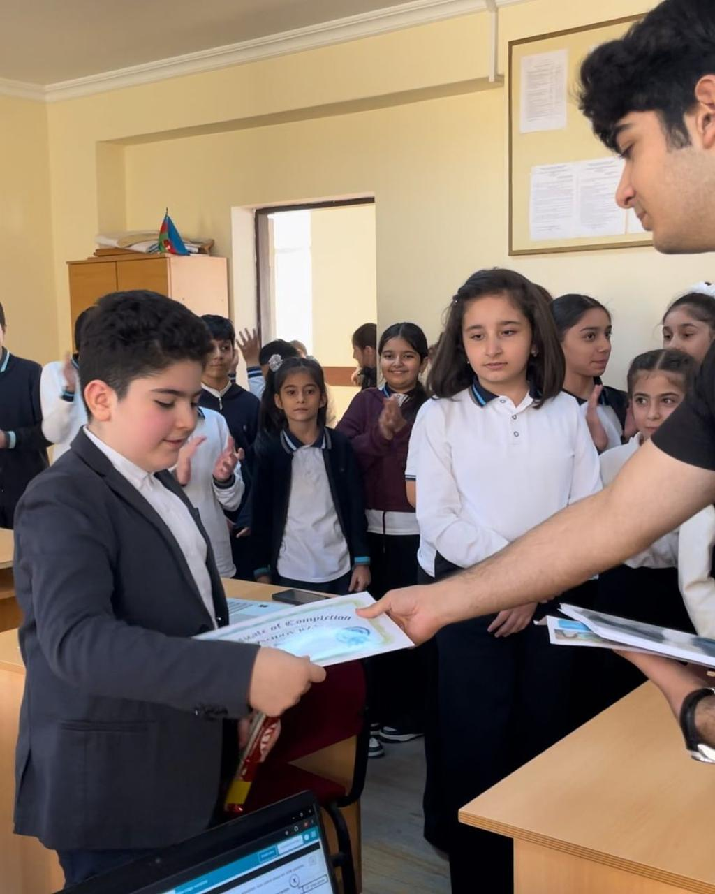
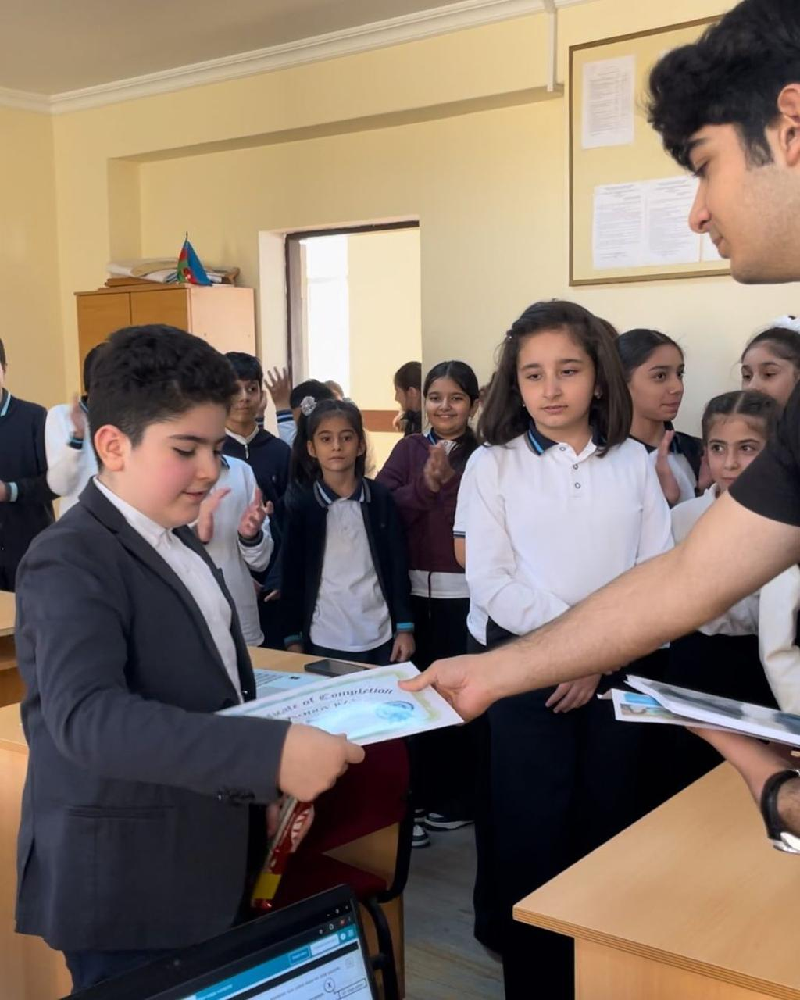

Hour of Code event
This event is about working principles of software.
With this event we were able to share our knowledge with other students who were willing to mtake steps in computing and information systems.We explained 20 students and explained how to work on code.org puzzles to better understand concepts. During the Hour of Code, we first gave students some information about ADA University, faculties, teachers, and statistics on the success of students studying here and then explained basic moves like forward, right, and left, then went to more complex ones such as ‘repeat’, ‘until reached’ loops on the whiteboard, which gave a better understanding for them before starting the practical part.


On the practical part, we helped students with any troubles they had such as internet connection problems, or any misunderstanding of how they needed to solve specific level problems on code.org. Also, some of the students did not have computers, but as we ensured they still worked we gave them our smartphones. Even the first student to complete the full course was working with a phone, which surprised us. As they said, students were trying this for the first time, which created little difficulties for us, but they were great anyway. Learners liked this activity as it was the start of a journey in computer science maybe for some of them, and especially liked the part of awarding certificates and prizes for first, second, and third places. They got special awards -several snacks- which was a motivation for them to think and solve puzzles faster. They progressed very well as in a matter of 45 minutes we already had first and second places which already solved all the puzzles. Other students were at least in the 15th level of overall 20. The fact that the Internet connection was weak in that school and sometimes even disconnected didn’t go well. Secondly, cooperation skills were used to organize and plan this event with our team of four. At first, we gathered with the team without any ideas at all and with problems from the very beginning such as finding a common time for everyone, distributing the work to everyone, and finding a place. We talked with the team for a long time about common time and the first time we gathered after all the classes to discuss work and find a place. Then we distributed the work to everyone, for example, noting those who would present and those who would do the technical part. After all, we began to look for an organization where the children did not have such an opportunity to get into common development for the future. We chose Secondary School No. 258. The very first thing that caught our eye was the school's conditions. It was clear that the children had limited opportunities in computer science due to such problems as a lack of computers for all students, and problems with the Internet, which very often stopped, because of which the children had to take the test from the beginning. Each of us practiced puzzles on-site several times to be able to teach them to students afterward at home. The next day we came and explained them to learners. Prizes and certificates were another thing that we prepared to motivate students and foster competition. Certificates were printed out the day before the event, but to do that we had to have the full names of the students. So, we communicated with the teacher and asked her to give us the names and surnames of all twenty students in the class. Also, we prepared our presentation several days ahead.
 

When we saw that the child was stuck for a long time on one module, we approached the child and helped even if he did not ask, so that it would be easier for him to understand. Generally, we tried to give students some time to try to solve problems themselves, but if they could not, then we approached and explained the problem. Lastly, finding a mutual time that fits every group member was another challenge. We had lessons at different times, so it was quite challenging to seek time appropriate for all of us. As a result of all, having completed the whole project, the children were happy to learn new knowledge. We distributed the children's certificates for their successful work at the end of the course and having secured everything with a photo, we left the school with the profound sense of warmth and fulfillment. After all, the class teacher thanked us for our work and the contribution to the development of children that we made. We, in turn, were glad that we gave the students new knowledge and improved our skills in conducting lectures, teaching, and organizing.